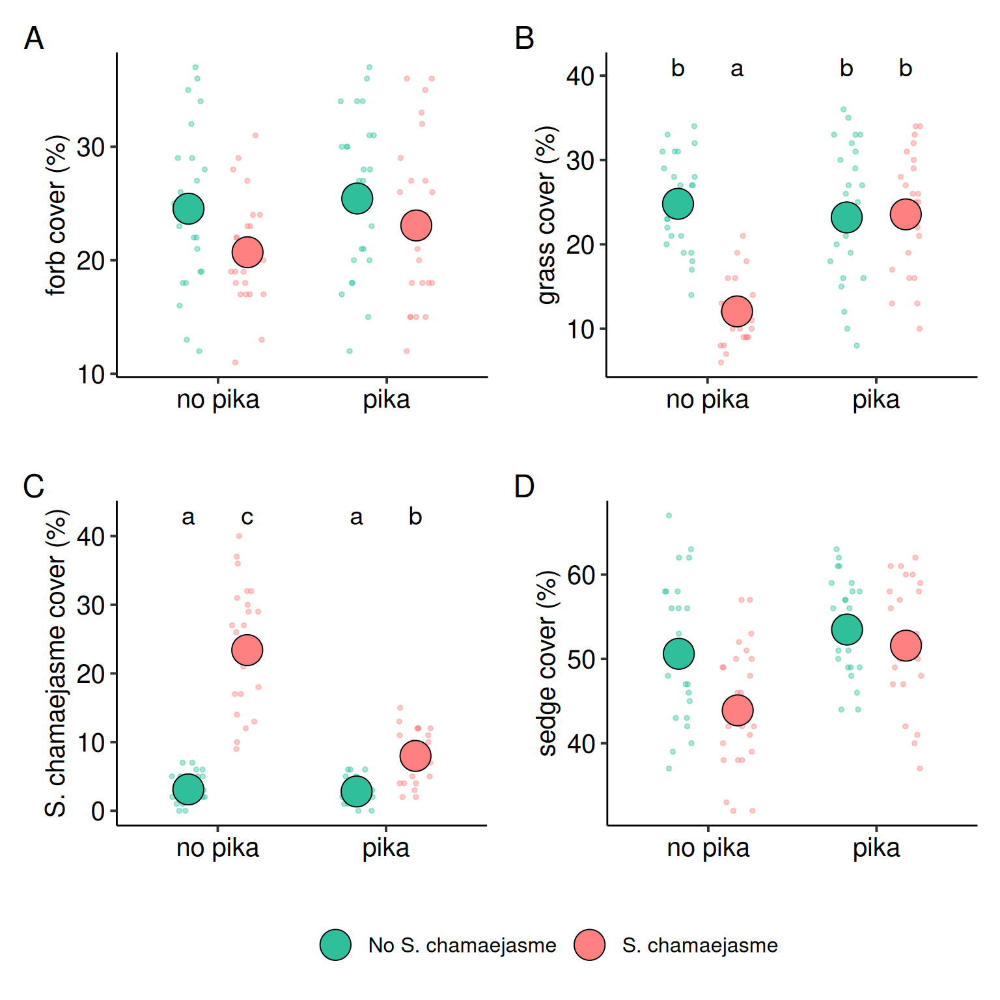

Pika-Yak Interaction: Plant Cover
1 Forbs Cover
Forb cover showed a small but significant reduction with the poison plant (S. chamaejasme) treatment, while pika presence alone had no measurable effect (Table 1). The interaction between pika and poison plant treatments was not significant, indicating that pika did not alter the poison plant’s effect on forb cover. Random variation across blocks and years was small, and no month-to-month variation was detected.
2 Grasses Cover
Grass cover was significantly reduced by the poison plant (S. chamaejasme) treatment, with odds of occurrence dropping to less than half in treated plots. Pika presence alone had no detectable effect in untreated plots, but in treated plots, pika presence substantially increased grass cover, offsetting some of the negative effect of the poison plant. This positive interaction suggests that pika may facilitate grass recovery when S. chamaejasme is present. Random variation across blocks and months was small, and no variation was detected across years. See the model summary and contrast tables (Table 3, Table 4).
3 S. chamaejasme Cover
Stellera chamaejasme cover was strongly increased in the poison plant treatment (Table 5). Pika presence alone had no significant effect in untreated plots but significantly reduced the large cover gains from the poison plant treatment (Table 6). This interaction indicates that pika substantially suppress S. chamaejasme when it is present in high abundance. Random variation across blocks, years, and months was small relative to the fixed effects.
4 Sedges Cover
Sedge cover was significantly reduced by the poison plant (S. chamaejasme) treatment, while pika presence alone had no significant effect. The positive pika × poison plant interaction was marginally non-significant (p = 0.076), suggesting a possible tendency for pika to lessen the negative effect of the poison plant (Table 7). Random variation was small across blocks and months, and no year-to-year variation was detected.
| effect | term | estimate | std.error | statistic | p.value |
|---|---|---|---|---|---|
| fixed | (Intercept) | -1.123 | 0.106 | -10.556 | 0.000 |
| fixed | pika | 0.048 | 0.096 | 0.497 | 0.619 |
| fixed | poison plant | -0.219 | 0.099 | -2.210 | 0.027 |
| fixed | pika : poison treamtent | 0.090 | 0.139 | 0.650 | 0.515 |
| ran_pars | block | 0.104 | NA | NA | NA |
| ran_pars | year | 0.089 | NA | NA | NA |
| ran_pars | month | 0.000 | NA | NA | NA |
| effect | term | estimate | std.error | statistic | p.value |
|---|---|---|---|---|---|
| fixed | (Intercept) | -1.109 | 0.096 | -11.579 | 0.000 |
| fixed | pika | -0.088 | 0.099 | -0.895 | 0.371 |
| fixed | poison plant | -0.878 | 0.113 | -7.758 | 0.000 |
| fixed | pika : poison treamtent | 0.898 | 0.151 | 5.966 | 0.000 |
| ran_pars | block | 0.130 | NA | NA | NA |
| ran_pars | year | 0.000 | NA | NA | NA |
| ran_pars | month | 0.020 | NA | NA | NA |
| contrast | odds.ratio | SE | df | null | z.ratio | p.value |
|---|---|---|---|---|---|---|
| no pika No S. chamaejasme / pika No S. chamaejasme | 1.092 | 0.108 | Inf | 1 | 0.895 | 0.807 |
| no pika No S. chamaejasme / no pika S. chamaejasme | 2.407 | 0.272 | Inf | 1 | 7.758 | 0.000 |
| no pika No S. chamaejasme / pika S. chamaejasme | 1.071 | 0.105 | Inf | 1 | 0.692 | 0.900 |
| pika No S. chamaejasme / no pika S. chamaejasme | 2.203 | 0.252 | Inf | 1 | 6.917 | 0.000 |
| pika No S. chamaejasme / pika S. chamaejasme | 0.980 | 0.097 | Inf | 1 | -0.204 | 0.997 |
| no pika S. chamaejasme / pika S. chamaejasme | 0.445 | 0.051 | Inf | 1 | -7.105 | 0.000 |
| effect | term | estimate | std.error | statistic | p.value |
|---|---|---|---|---|---|
| fixed | (Intercept) | -3.438 | 0.257 | -13.390 | 0.000 |
| fixed | pika | -0.105 | 0.215 | -0.489 | 0.625 |
| fixed | poison plant | 2.252 | 0.174 | 12.914 | 0.000 |
| fixed | pika : poison treamtent | -1.153 | 0.252 | -4.576 | 0.000 |
| ran_pars | block | 0.159 | NA | NA | NA |
| ran_pars | year | 0.170 | NA | NA | NA |
| ran_pars | month | 0.243 | NA | NA | NA |
| contrast | odds.ratio | SE | df | null | z.ratio | p.value |
|---|---|---|---|---|---|---|
| no pika No S. chamaejasme / pika No S. chamaejasme | 1.111 | 0.239 | Inf | 1 | 0.489 | 0.962 |
| no pika No S. chamaejasme / no pika S. chamaejasme | 0.105 | 0.018 | Inf | 1 | -12.914 | 0.000 |
| no pika No S. chamaejasme / pika S. chamaejasme | 0.370 | 0.070 | Inf | 1 | -5.286 | 0.000 |
| pika No S. chamaejasme / no pika S. chamaejasme | 0.095 | 0.017 | Inf | 1 | -13.289 | 0.000 |
| pika No S. chamaejasme / pika S. chamaejasme | 0.333 | 0.063 | Inf | 1 | -5.769 | 0.000 |
| no pika S. chamaejasme / pika S. chamaejasme | 3.519 | 0.463 | Inf | 1 | 9.558 | 0.000 |
| effect | term | estimate | std.error | statistic | p.value |
|---|---|---|---|---|---|
| fixed | (Intercept) | 0.024 | 0.076 | 0.319 | 0.750 |
| fixed | pika | 0.115 | 0.077 | 1.499 | 0.134 |
| fixed | poison plant | -0.269 | 0.077 | -3.506 | 0.000 |
| fixed | pika : poison treamtent | 0.193 | 0.109 | 1.775 | 0.076 |
| ran_pars | block | 0.083 | NA | NA | NA |
| ran_pars | year | 0.000 | NA | NA | NA |
| ran_pars | month | 0.060 | NA | NA | NA |